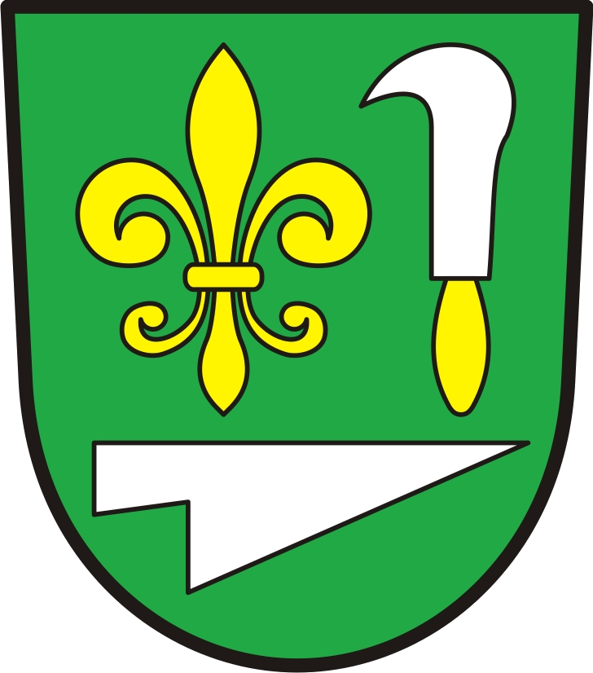

Načítám data…

Program rozvoje obce Čejč 2026–2032
Výsledky dotazníkového šetření · analytický dashboard
— respondentů
Přehled
Spokojenost
Hodnocení služeb
Rozvoj obce
Odpady & zápach
Informační kanály
Volné odpovědi
Demografika
Filtr:
Pohlaví: vše
Muži
Ženy
Věk: vše
15–29
30–49
50–64
65+
Pobyt: vše
Od narození
Od dětství
5+ let
Do 5 let
Domácnost: vše
S dětmi
Bez dětí
Jiné
✕ Reset
Zobrazeno:
—
Jak se Vám v Čejči žije?
Mezilidské vztahy v obci
Co by se mělo zlepšit?
max 5 voleb
Na co byste přednostně využili finanční prostředky obce?
max 5 voleb
Spokojenost se životem v obci
Spokojenost dle pohlaví
Spokojenost dle věkové skupiny (% rozložení)
Mezilidské vztahy dle věku
Spokojenost dle délky pobytu
Hodnocení prostředí a služeb
ℹ️ Škálování jako ve škole: 1 = nejlepší, 5 = nejhorší. Výjimka: hluk (1=ticho, 5=hluk).
Průměrné hodnocení všech oblastí
Rozložení – 5 nejhůře hodnocených
Rozložení – 5 nejlépe hodnocených
Rozvoj obce
Jak by se měla obec dále rozvíjet?
Měla by obec investovat do výstavby bytů pro mladé?
Měla by obec investovat do výstavby bydlení pro seniory?
Měla by se obec zaměřit na rozvoj cestovního ruchu?
Na co byste přednostně využili finanční prostředky obce?
Jak rozvíjet cestovní ruch? – komentáře
Odpady & zápach
Jak intenzivně pociťujete zápach z Horákovy farmy?
Zápach z Horákovy farmy dle ulice
Původce zápachu:
Všichni původci ▾
Jak intenzivně pociťujete zápach z jiných zdrojů?
Původci zápachu
Ulice – jiné zdroje zápachu
Třídíte odpad?
Vyhovuje Vám systém třídění odpadů?
Připomínky k systému třídění odpadů
Informační kanály
Jakým způsobem získáváte informace o dění v obci?
Pravidelně
Občas
Nevyužívám
Jakým způsobem získáváte informace o dění v obci? – úplný přehled
Volné odpovědi
Kategorie – co chybí
Kategorie – zdravotní/sociální služby
Co nejvíce chybí
Všechny kategorie ▾
Odpověď
Kategorie
Zdravotní / sociální služby
Všechny kategorie ▾
Odpověď
Kategorie
Další náměty a komentáře
Všechny kategorie ▾
Odpověď
Kategorie
Demografický profil respondentů
Pohlaví
Věková skupina
Délka pobytu v obci
Typ domácnosti